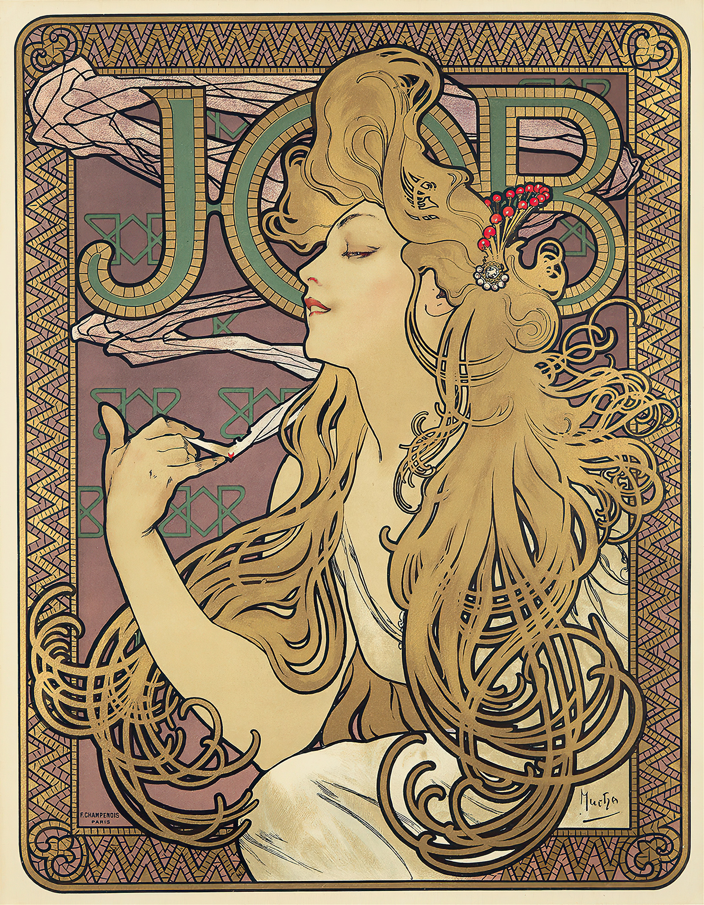

무하는 모에 에 샹동이나 폭스-랜드 자마이카 럼, 라 트라피스틴, 베네딕틴, 코냑 비스큇과 같은 회사의 많은 술 광고를 담당하고 있었다. 술 광고에 등장하는 무하의 여인들은 더 화려한 의상을 걸치고 도발적인 자세로, 술잔을 건네며 우리를 유혹한다. 그녀들은 매혹적이지만 조금은 위험해 보인다. 이것은 이미 이 시대의 광고가 성을 상품화하는 하나의 전략을 잘 보여준다.
욥의 포스터를 보자. 그녀의 손끝에 쥐어진 담배는 긴 연기 자욱을 남기며 타들어 간다. 상승하는 연기와 더불어 그녀의 머리칼은 부풀어 오르고 길게 목을 뻗어 고개를 젖힌 그녀는 담배의 연기 속에 황홀경으로 빠져든다. 살며시 감은 눈과 자연스레 벌어진 입술에서 그녀가 경험하는 무아지경에 우리도 도취된다. 모자이크로 만들어진 배경과 '욥'이라는 글자는 이 포스터에 이국성을 더해 결코 우리의 뇌리에서 잊히지 않는다. 그는 이미 광고를 예술의 경지로 끌어 올려놓고 있었다.